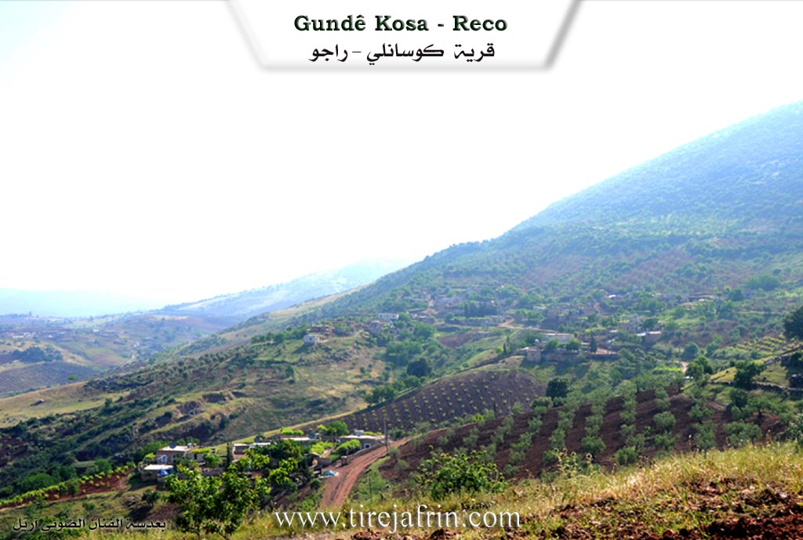
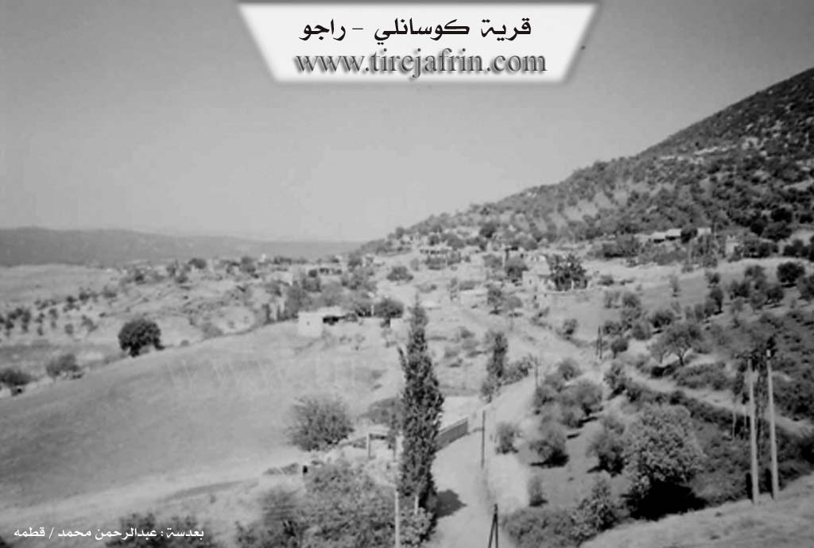

General Information
Nahiya (Subdistrict)
Reco
Also Known As
Kosa, Kosan, Kosanli, Kûsa, كوسان, كوسانلي, كوسو
Tribes
Kasan, Kosan, Kûsa, Reşwan, Şêxî
Families, Clans, etc.
Mala Berîmce, Mala Garcîn, Mala Hesen, Mala Kosen, Mala Qamber, Mala Qîse, Mala Reşkê, Mala Sîno, Mala Çêxel

Photos


Basic Information about Kosa
Source: Ax û Welat
Etymology: Derived from the Êla Kûsa, a branch of the Şêxî tribe
Old Names: Tilê Gozê
Foundation Date/Period: 900 years ago
Number of Caves: 3
Springs: Kaniya Gund, Kaniya Olq, Qestel, Kaniya Ga, Kaniya Eho, Kaniya Germik, Kaniya Drikê
Hills: Tilê Gozê, Kûka Çiyayî, Benê Mille, Benê Mistefake, Benê Mêşa, Benê Birekê
Ruins: Kelha Sorê
Other Landmarks: Geliyê Mûsê, Geliyê Penêreka, Geliyê Şurkê
Summaries
I. Summary from TirejAfrin Site (English) of Kosa
Source: https://www.tirejafrin.com/site/kura%20afrin%20%20%20Reco%20-%20kosa.htm
It is stated in the book جبل الكرد (عفرين) دراسة جغرافية Çiyayê Kurmênc (Efrîn): A Geographical Study: Kosa, Kosanlî, Kosan /1088 people - 47 hectares - 22km - 600m/:
Kosa: Meaning "beardless" (sparse chin hair). It is the name of a Kurdish clan from the Reşwan tribe; members of it are found in Şehrezûr in southern Kurdistan (Lerch, p. 57). The "Kose or Kosiye" clan was mentioned by Ibn Battuta. There is also a clan named Kasan in Rewandûz (Lerch, p. 55).
This small village is located on the northern slope of the Bêv highland. It is about 2km away from the Turkish border. There are numerous small springs west of the village.
It is stated in the book عفرين .... نهرها وروابيها الخضراء Efrîn... Her River and Her Green Hills: Kosanlî: A village in Çiyayê Kurmênc following the Reco district, Efrîn region, Heleb governorate. It is a small village located in the northern section of the mentioned mountain on the northwestern slope of the Beîfe mountain height, from which streams descend toward the northwest and west toward the Wadiyê Çemê Reş (Black River valley). Its soil is alluvial. It is located 2km south of the current Turkish border and 22km northeast of the town of Reco.
It is bordered to the north by a deep stream and, at a distance of 500m, the village of Benerkê. To the south, it is bordered by a high, rugged mountain chain planted with oak, cypress, and almond trees, called the Almond Mountains (Beîfe) or Çiyayê Şehîdan (Mountain of Martyrs), named after a battle that took place between Syrian Mujahideen revolutionaries and soldiers of the French occupation during the independence era, and the village of Walîklî. To the west, a deep stream, a rugged mountain chain, the farm of Ereblî, and the Riya Meydan Ekbez-Bilbil (Meydan Ekbez-Bilbil road). To the east, a high mountain chain from the northern Çiyayê Kurmênc chain and the village of Şingêlê.
The number of its houses reaches 35 houses, and the age of the village, according to the account of the village residents, is approximately 400 years. Its old houses are of stone and mud with wooden ceilings, while the modern ones are cement and have expanded toward the west and north. An electricity network, a primary school, and a telephone network are available there. The village drinks from cisterns in which rainwater collects and from the springs found to its west. Currently, water has been extended to it via a network from an artesian well belonging to the state.
The residents work in rain-fed agriculture (olives, vineyards) on a narrow patch of land /47 hectares/, alongside raising sheep and goats. Its lands are generally mountainous and rugged from all sides. A deep stream separates the village and the village of Benderklî. This village was historically considered among the Meydaniyan villages.
Sources of Information:
- Book: جبل الكرد (عفرين) دراسة جغرافية Çiyayê Kurmênc (Efrîn): A Geographical Study by د. محمد عبدو علي Dr. Mihemed Ebdo Elî.
- Book: عفرين .... نهرها وروابيها الخضراء Efrîn... Her River and Her Green Hills by عبدالرحمن محمد Ebdulrehman Mihemed from the village of Qetme.
- Studies of Navenda Tirej Soft / Ebdulrehman Hacî Osman.
- Some residents of the villages.
Preparation and Execution: Director of the Tirej Efrîn website: Ebdulrehman Hacî Osman 20/12/2013
II. Summary of Kosa from Ax û Welat
Source: https://www.youtube.com/watch?v=75efleuVzSM
The village of Kûsa is situated in the Raco district of the Efrîn region, located directly along the border separating Rojava from Bakur. This ancient settlement sits opposite Çiyayê Taros and has a history spanning approximately nine hundred years. According to local elders, the village was originally founded at a site called Tilê Gozê, located about five hundred meters away from the current settlement. The ancestors of the current residents moved the village to its present location to be closer to water sources. The name of the village is derived from the Êla Kûsa, a tribe that is identified as a branch of the broader Şêxî confederation.
The history of Kûsa is deeply marked by the drawing of the modern border in 1938. This geopolitical division separated the villagers from much of their agricultural land and their relatives on the Turkish side. Despite this separation, the residents maintain strong kinship ties, noting that they all belong to the same lineage. The social structure of the village consists of several interrelated families, including Mala Çêxel, Mala Qamber, Mala Reşkê, Mala Sîno, Mala Garcîn, Mala Berîmce, Mala Qîse, Mala Hesen, and Mala Kosen. While the village currently houses around fifty families, a significant number of the original inhabitants have migrated to cities such as Heleb and Hums for economic opportunities.
Geography and water play a central role in the identity of Kûsa. The village is famous for its eight springs, which include Kaniya Gund, Kaniya Olq, Qestel, Kaniya Ga, Kaniya Eho, Kaniya Germik, and Kaniya Drikê. These water sources have historically supported orchards of pomegranate and walnut trees, although some have dried up in recent years. The surrounding landscape features distinct valleys such as Geliyê Mûsê, Geliyê Penêreka, and Geliyê Şurkê. Additionally, the village is home to Kelha Sorê, a ruined fortress dating back to the Byzantine era. An elder named Apê Mûsa describes this site as a former military garrison used to defend against invasions, linking it to the El-Hesiyîn and the region's turbulent history.
Culturally, Kûsa is the home of the renowned poet Arif, who passed away two decades ago. He authored poetry collections such as Dîwanê Çiyayî and Hawar û Hêvî, writing in Kurmancî using the Latin alphabet. He was a learned man who memorized religious texts like the Qur'an, Încîl, and Tewrat, while also composing verses about Kurdish historical figures like Qadî Mihemed, Şêx Seîd, and Simko. The village also preserves traditional veterinary practices, specifically the production of a medicine called Qopan, made from local plants like Evris and Tîbûk to treat livestock. Legends of the tribe include the story of Ûsivê Şêr, a notable figure from the Kûsa lineage.
II. Ax û Walat Book 1
VILLAGE OF KOSA
19.1.2016
The village of Kosa is situated opposite the TOROS mountains, affiliated with the Reco district of the Efrîn canton, about 25 km north of Reco and about 3 km from the northern border. Previously, the village of Kosa was at (Tilê Gazê), which is to the northwest of the village, but they later came to this area for the availability of water.
The name of the village comes from the name of the (KOSA) clan, which is a branch of the (Şêxî) tribe. The age of the village is more than 900 years, and it is the oldest village in this region.
Previously, the village was affiliated with the Qoçanlî district, which is part of the Kilis region, but after the border between Rojava and the north was drawn in 1938, the village was attached to the Reco district, but to this day, many of the villagers' fields remain in the north, or on the border line.
The village of Kosa is at the foot of Mount (Behîvê). To the north are the mountains of (Benê Mile) and Benê Mistefakê; to the east is Benê Mêşa, where honey bees were kept; and to the south is Benê Birîkê, where there is a water spring.
To the north of the village and on the border line are the villages of (Dêr Osman and Qaziqlî); they have had social relations with each other for a long time and have intermarried. To the east is the village of Şingêlê, to the north Penêreka, to the south Meydana, and to the west is Ekbes Meydana.
There are about 50 houses and nearly 1500 people living in the village.
There are 6 families in the village, and all are from one family, meaning they are all from the KOSA clan:
The family of Qîsê, Qêsim, Garcîn, Birîmce, Çêqir, and the family of Sîno.
The village of Kosa and the surrounding villages are very cold in the winter seasons because they are opposite the Toros mountains, whose slopes are adorned with snow in all seasons. But in the summers, the village of Kosa is very cool, and a pleasant and beautiful breeze blows there.
At the bottom of the village and to the north lies the plain of (Wêranşerê), which the official border and wires divide into two parts between the north and west of Kurdistan.
The village of Kosa is famous for its water and springs, and there are 8 springs in the village. The people of the village have dug a water well, and its water has been distributed to all the houses of the villagers, and they also water their fields with it.
There are many valleys and ravines around the village; to the north of the village are the Geliyê Mûsê and Geliyê Penêreka, and to the west is Geliyê Şurkê.
There are 3 caves to the west of the village; in the past, people lived in them, and after a while, these caves became places for sheep and livestock.
Because the soil of the village's fields is red, it is very suitable for agriculture. The people of the village, for their livelihood, rely on agriculture and primarily on the care of olive trees, along with the cultivation of wheat, barley, vineyards, and fruit trees.
Along with agriculture, some families make their living by raising livestock, and they sell their products in the markets of the region.
The fortress of (Sûrê) is to the west of the village, and it is an ancient fortress built during the Byzantine era. It has a hammam and many rooms, and to this day, its ruins are witnesses to the events and history that have passed. The length of the fortress wall is about 500 meters.
It is said that the events of the epic of (Ûsibê Şer) happened within the KOSA tribe, and he was a person from this clan.
There is a poet from the village named (Arif Xelîl), but he has now passed on to God's mercy. He wrote many collections of poetry and books.
Transcriptions and Subtitles
| Source | Video | Subtitles | Transcript |
|---|---|---|---|
| Ax û Welat 1 | Watch Video | Download SRT | View Transcript |
Foundation/Origin Information of Kosa
This village was formerly considered among the Meydan villages.
Source: TirejAfrin Site
One of seven villages established in an area originally called Telê Xozê (Pig Hill). Its inhabitants are from the Şêxî tribe.
Source: Ax û Walat Transcript
Possible Village Name Meaning of Kosa
"Kosa" means "beardless chin". It is the name of a Kurdish clan from the Rashwan tribe.
Source: TirejAfrin Site